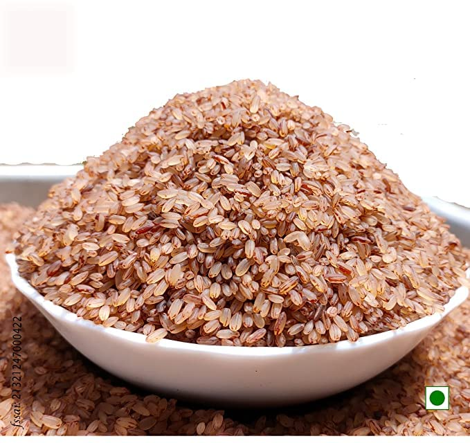
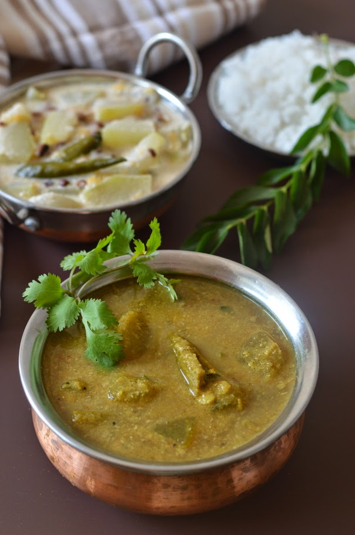
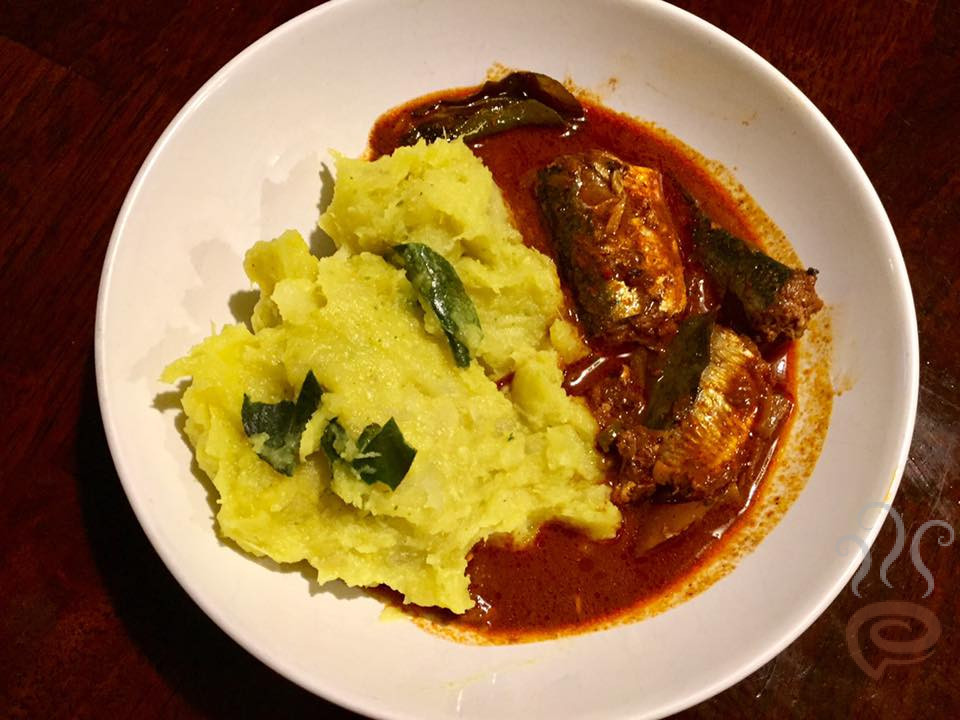
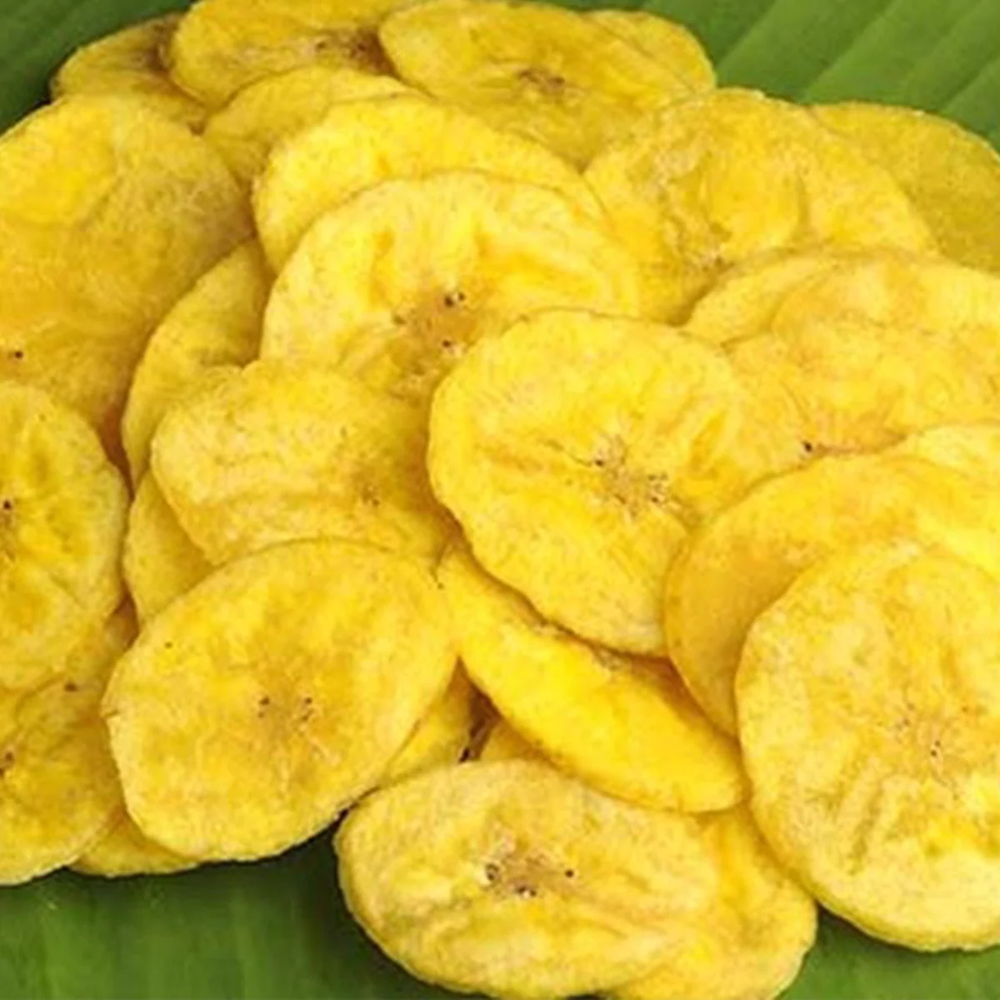

Palakkad
This article is about the PALAKKAD, district of Kerala.
formerly known as Palghat, historically known as
Palakkattussery is a city and municipality in the Indian state of
Kerala.Palakkad is most densely populated municipality and fourth-most
densely populated city in Kerala. It was established before Indian
independence under British rule and known by the name Palghat. Palakkad is
famous for the ancient Palakkad Fort, which is in the heart of the city
and was captured and rebuilt by Hyder Ali in 1766. The city is about 347
kilometres (216 mi) northeast of the state capital, Thiruvananthapuram.
History
Palakkad has a rich and diverse history, with evidence of human settlement
dating back to the Neolithic period. The region was ruled by various
dynasties and empires, including the Chera dynasty, the Pandya dynasty,
and the Vijayanagara Empire. In the 14th century, the region came under
the rule of the Zamorin of Calicut, who built a fort in the area. Later,
in the 18th century, the region was invaded by Hyder Ali, the ruler of the
Kingdom of Mysore, who captured the fort and made Palakkad a part of his
empire. In 1784, the British East India Company took control of Palakkad
after defeating Tipu Sultan, the son of Hyder Ali, in the Fourth
Anglo-Mysore War. The British built a new fort in the area, which is now
known as the Palakkad Fort. During the Indian Independence movement,
Palakkad played a significant role, with several prominent leaders and
activists from the region participating in the struggle for freedom. After
independence, Palakkad became a part of the state of Kerala when it was
formed in 1956. Today, Palakkad is a thriving city with a rich cultural
heritage and a growing economy. It is known for its agricultural products,
including rice, coconuts, and spices, as well as its tourism industry. The
city has also made significant progress in the fields of education,
healthcare, and infrastructure development in recent years.
Origin Of The Name Palakkad
How Palakkad derived its name is a bit of a matter of choice since there
are so many opinions and views tracing its etymology. According to one
version, “Pala” (barren) along with “kadu” (jungle) joined together
to give the land its name.Yet another version says that it was with
respect to the Jain Temple of the place that led to its name, Palighat,
since Pali is the sacred language of the Jains. Palighat subsequently gave
way to Palakkad. The most believed version is the third one according to
which Palakkad owes its name to the
Pala trees that once occupied its major portion . As for the
history of Palakkad goes, very little is known about it. Evidence in the
form of relics suggests that Palakkad existed during the Paleolithic age.
First millennium AD saw the Perumal rulers exercising their control over
the land. This control was later disintegrated into smaller divisions by
the Perumal governors. Accounts of William Logan, the Scottish author of
the Malabar Manual also mentions Palakkad as one of the Malabar regions
that was captured by the Pallavas of Kanchi. Another record describes a
war that was fought by the king of Palakkad in 988 AD to stop the invading
army of King of Kongunadu at Chittur. The victory of Palakkad in that war
is still celebrated in the form of a festival. In 1757, yet another
invasion by the Zamorins made the then Raja seek the help of Mysore ruler,
Hyder Ali. Hyder Ali obliged and eventually secured Palakkad for himself
and later his son, Tipu Sultan. However, with the defeat of Tipu in the
third Anglo Mysore war of 1792, Palakkad, along with other Malabar
territories (belonging to Tipu) passed off to the British. The British
made Palakkad a part of the Malabar District of Madras Presidency which
post independence became a part of the Madras state. In 1956, when Kerala
came into existence, Palakkad became a part of it.
Geographic Features
Palakkad is the gateway to Kerala due to the presence of the Palakkad Gap
in the Western Ghats. The city is in central Kerala. Malayalam is the
official language in Palakkad. Two main tributaries of Bharathapuzha,
Kalpathi River and Kannadi River flows through the city. Of the numerous
dams in Palakkad district, the largest Malampuzha dam is 15 kilometres
(9.3 mi) from Palakkad city.[25] Palakkad is about 347 kilometres (216 mi)
northeast of Trivandrum,144 kilometres (89 mi) of Kochi, 50 kilometres (31
mi) southwest of Coimbatore in Tamil Nadu, 66 kilometres (41 mi) northeast
of Thrissur, and 127 kilometres (79 mi) southeast of Kozhikode, which are
mainly connected by National Highways, namely Salem-Kochi National Highway
NH 544, and Kozhikode-Palakkad National Highway NH 966.
Specialities of Palakkad
Palakkad, also known as the "Rice Bowl of Kerala," is famous for
its unique cuisine, culture, and natural beauty.
Special Foods
-
 Palakkadan Matta Rice: This variety of rice is grown in the Palakkad
region and is famous for its distinct flavor and aroma. It is widely
used in traditional Kerala cuisine and is a staple food in Palakkad.
-
 Kairali Thali : The Kairali Thali is a
traditional meal that is served in many restaurants in Palakkad. It
consists of rice, sambar, rasam, avial, thoran, pickle, papad, and a
dessert.
Kairali Thali : The Kairali Thali is a
traditional meal that is served in many restaurants in Palakkad. It
consists of rice, sambar, rasam, avial, thoran, pickle, papad, and a
dessert.
-
 Puttu and Kadala Curry: Puttu is a popular breakfast dish made
from rice flour and coconut, steamed in cylindrical tubes. It is
typically served with a spicy curry made from black chickpeas (kadala
curry).
Puttu and Kadala Curry: Puttu is a popular breakfast dish made
from rice flour and coconut, steamed in cylindrical tubes. It is
typically served with a spicy curry made from black chickpeas (kadala
curry).
-
 Sambar: Sambar is a
popular lentil-based dish that is made with a variety of vegetables,
spices, and tamarind. It is a staple food in Palakkad and is served with
rice or idli.
-
 Kappa and Meen Curry: Kappa is a traditional dish made
from tapioca, which is boiled and mashed with grated coconut and spices.
It is typically served with a spicy fish curry made with tamarind,
coconut, and spices.
-
 Banana Chips: Palakkad is famous for its
crispy and crunchy banana chips, which are made from raw plantains that
are thinly sliced and deep-fried. They make a great snack and are a
popular souvenir for visitors.